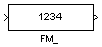
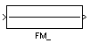
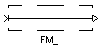
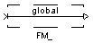
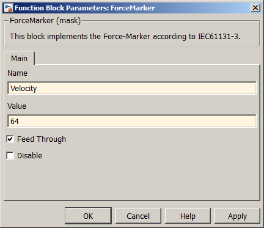

| MBDS Environment |
|
Force-Marker |
MATLAB Helpdesk |
General
Force-Marker (FM) blocks are used to modify sigal values of an MBDS model. They provide a proper and reversible way for supplying test values without changes of the model design, e.g. cut off a signal line and placing a constant block to feed a test value. FMs can be used not only whithin simulations but also whithin the Online Test (OLT). Especially, for the latter use case FMs are the only way to influence signals while the SW is running on the target HW.
Library
DescriptionMBDS Blockset
Force-Value Mode Feed-Through Mode Global Feed-Through Disabled Global Disabled     The configuration of the PM is done via the block parameter mask (see Figure 1):

- Name: Specify a unique FM name
- Value: Specify value to be force if FM is not in feed through mode
- Feed Through: If enabled the input signal is fed to the output port. If disabled the FM works in Force-Value mode, i.e. the specified Force value is fed to the output port
- Disable: If enabled no source code is generated for the PM. If disabled source code is fenerated and the PM is available in the OLT session.
Figure 1: FM Parameter Mask Dialog
After a FM is removed from or added to a model the project has to be rebuild and downloaded to the target. Accordingly, the FMs are considered by the Online-Test, i.e you can modify the force value and select the FM mode while the SW is running on the trarget HW.You can globally control the FM blocks in the model design of your project via the Project Options dialog.
Inputs and Outputs
Example*) Except enumeration data types.
Port I/O Data Type Description In In Any* Input signal Out Out Same as input Outputs the input signal when FM is in Feed-Through mode or the specified Forced Value when Force-Value mode is selected
-